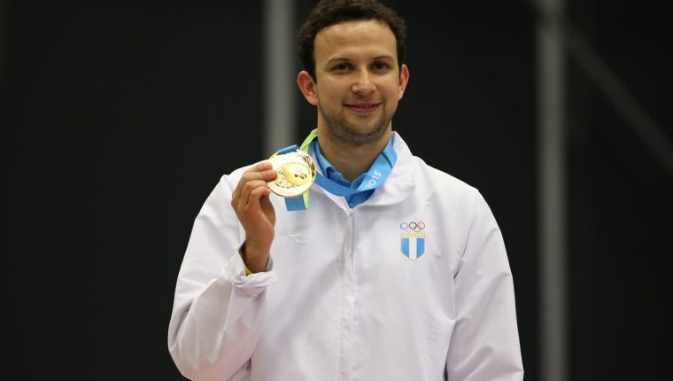

Biografía de Kevin Cordon

Fecha de Nacimiento:
Lugar de Nacimiento:
Biografía:
Kevin Haroldo Cordón Buezo (La Unión, 28 de noviembre de 1986) es un deportista guatemalteco que compite en bádminton, en las modalidades individual y de dobles. Es primo del jugador y entrenador de fútbol Haroldo Cordón. Ganó cuatro medallas en los Juegos Panamericanos entre los años 2007 y 2019, y diez medallas en el Campeonato Panamericano de Bádminton entre los años 2008 y 2022.1 Participó en cuatro Juegos Olímpicos de Verano entre los años 2008 y 2020, su mejor actuación fue un cuarto puesto logrado en Tokio 2020 en la prueba individual. Fue el abanderado de Guatemala en la ceremonia de apertura de los Juegos Olímpicos de Pekín 2008.2
Imagen:
Contactame